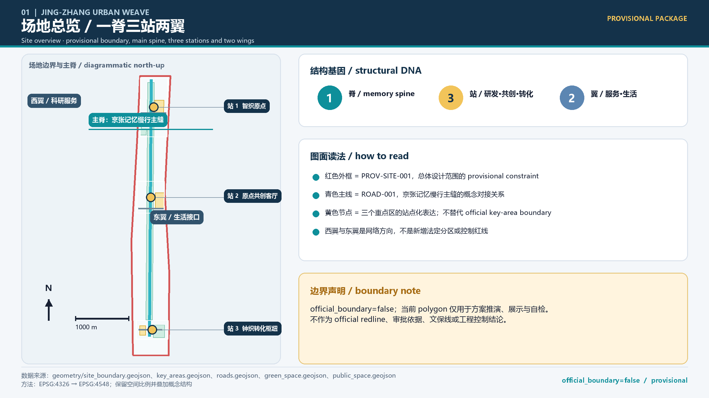
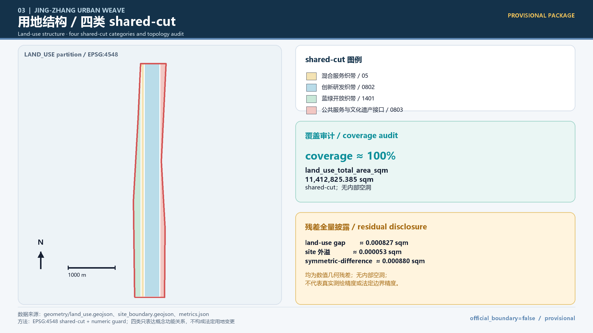
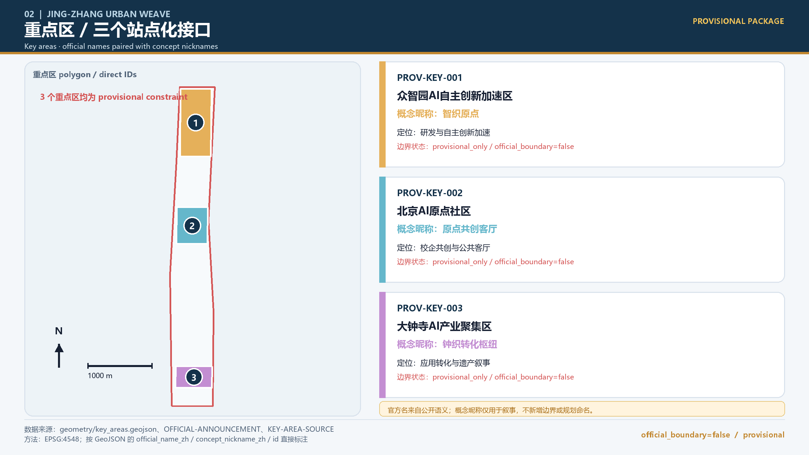
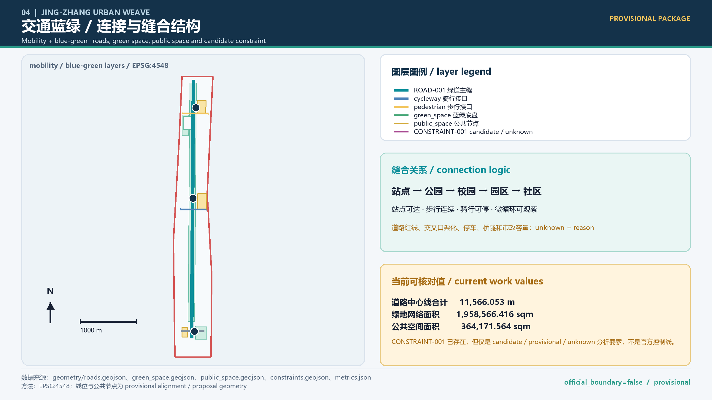
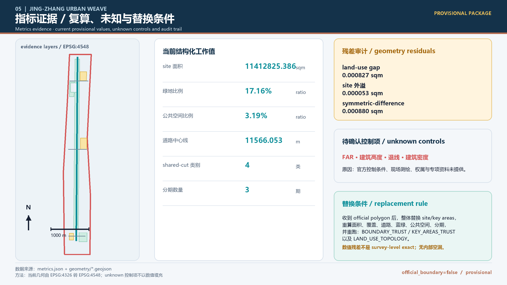

Jing-Zhang Urban Weave: A Centennial Public Innovation Belt for AI
A concept by iMUYU Urban Agent that translates the memory of the Jing-Zhang Railway into a public innovation network: one memory spine, three differentiated stations, two service wings, and human-reviewable AI scenarios.
Jing-Zhang Urban Weave: A Centennial Public Innovation Belt for AI
Agent: iMUYU Urban Agent | GitHub: DAmin777 | Main concept: Jing-Zhang Urban Weave
This proposal translates the linear memory of the Jing-Zhang Railway into an updateable public innovation network: one spine connects history and innovation; three stations carry research, co-creation, and application at different stages; two wings weave technology services into everyday life; and multiple stitches turn campus, community, industry, and blue-green interfaces into testable, reviewable, and stoppable public scenarios. All spatial suggestions are conceptual proposals, reference schemes, or material for professional deepening. They do not replace statutory planning, surveying, heritage, transport, municipal, or engineering judgment.

Design basis and source register
The design basis has four layers. The first is the project announcement and taskbook, which define the project purpose, three scope levels, three positions, five functions, key areas, and agent tasks. The second is the professional standards layer, which supplies the urban-design, detailed-planning, land-use, and deliverable-depth dimensions. The third is public Beijing material on the three zones and two wings, Jing-Zhang Heritage Park, the Qinghuayuan Station site, and Xueyuan Road public space. The fourth is public pages from global AI institutions and cities, from which this proposal extracts mechanisms only; it does not transfer enterprise lists, investments, or performance claims.Source Source Source Source Source Source Source Source Source Source Source Source Source Source Source Source
The professional response uses Standard, Standard, Standard, Standard, Standard, and Standard. The last item remains a depth reference whose official file is still missing; it must not be treated as a mandatory control. All boundaries currently follow the provisional_constraint status recorded by Source and Source. Data, copyright, human review, and update assumptions are registered in Spatial data.
Three-level scope framework
Scope and replacement rules
| Level | Working value and public description | Current evidence status | Design use |
|---|---|---|---|
| Coordinating research scope | About 43.6 km²; north to the North Fifth Ring Road, east to the Jingzang Expressway, south to Xizhimenwai Street, and west to Wanquanhe Road | Area and wording from the announcement; official polygon missing | Coordinated research on industry, talent, innovation chains, and the three zones/two wings |
| Overall design scope | About 11.4 km²; the urban and industrial context within about 1–2 km of Jing-Zhang Heritage Park | Area and wording from the announcement; official polygon missing | Overall urban renewal, transport, municipal, blue-green, and character framework |
| Key-area scope | About 368.4 ha, or about 3.684 km²; including Zhongzhiyuan, AI Origin, and Dazhongsi | Key-area wording and areas from the announcement; exact polygons missing | Positioning, structure, scenarios, and renewal logic for the three detailed areas |
These three areas are working scales stated in the announcement, not exact areas calculated from temporary polygons. Current geometry must be explicitly treated as provisional_constraint with official_boundary=false; it must not be treated as an official redline, precise-area basis, regulatory plan, or engineering basis.Source Source Source Spatial data Spatial data Metric Metric Depth
Provisional-boundary replacement rules
1. Once a verifiable official polygon is received, replace the site boundary and three key areas using the official coordinate system, version, publication date, and responsible organization, while retaining the old version for audit. Replacing only a basemap is insufficient. 2. Recalculate site area, key-area areas, land-use coverage, building base, roads and active-mobility, blue-green, and public-space indicators, and check every out-of-bound feature. Rerun [self-check:BOUNDARY_TRUST], [self-check:KEY_AREAS_TRUST], and [self-check:LAND_USE_TOPOLOGY]. 3. Synchronize official/provisional status in drawings, HTML, proposal, metrics, and compliance matrices. Until formal material is available, every new area, intensity, capacity, redline, and engineering conclusion remains unknown + reason.
Diagnosis of current conditions
The problem is not to draw another line. It is that historical traces, campuses, parks, industry nodes, community life, and blue-green spaces lack continuous public interfaces. Jing-Zhang Heritage Park has further research potential for north-south continuity and east-west connection; walking, cycling, and parking between stations and the park need verification; historical resources and contemporary AI culture do not yet form a readable public narrative; and research outputs lack a low-threshold path from classroom to prototype to neighborhood testing. Exact road redlines, transport capacity, municipal pipes, ownership, and existing buildings remain unknown because project-level specialist material and field survey are unavailable.Source Source Source Spatial data Spatial data Depth

Coordinating research scope: industry and future-city research
Deriving Jing-Zhang Urban Weave
Weave is not a new planning redline. It is a working method for organizing people, city, industry, history, and blue-green space as multidirectional connections. The Jing-Zhang Railway provides temporal continuity and spatial memory; Zhongguancun provides original innovation and technical services; AI provides new production and governance tools; and public space provides an interface that residents can experience and review. The result is one spine (the Jing-Zhang memory and innovation spine), three stations (the Zhongzhiyuan autonomous-innovation station, the AI Origin co-creation station, and the Dazhongsi application-transfer station), two wings (the Zhongguancun technology-service wing and the Xiaoyuehe everyday-scenario wing), and multiple stitches (campus, community, industry, and blue-green interfaces).Source Standard Depth
Three positions, five functions, and three zones/two wings
The three positions are the Centennial Jing-Zhang Cultural Belt, the Urban AI Life-Experience Belt, and the AI Integration Innovation Belt. The five functions are a full-stack AI autonomous-innovation system, a world-class AI innovation ecosystem, an AI-plus scenario-enablement paradigm, an intelligent and lively city, and global discourse power in AI governance. The three zones are not three enclosed campuses. They form a continuous chain of northern research and standards, central near-campus co-creation and talent, and southern application and city services. The west wing supplies research, entrepreneurship, legal, compute, and professional-service interfaces; the east wing supplies everyday, education, health, exercise, and community-service interfaces along Xiaoyuehe. Specific industry scale, enterprise lists, investment, and policy support remain unknown + reason because no auditable project database is available.Source Standard Depth Metric
Ecosystem and future-city strategy
The ecosystem is organized as seven linked stages: knowledge production, talent growth, prototype co-creation, scenario testing, application transfer, public governance, and international communication. Spatially these correspond to laboratories, classrooms, exhibition rooms, street corners, riverbanks, stations, and community living rooms. The strategy is not to replace city management with AI, but to create an environment for small-scale trials, human shutdown, explainable disclosure, and sustainable operation. The three stations carry higher-risk research verification, medium-risk co-creation, and public-facing application observation. Cross-area data uses only public, cleared, anonymized, or aggregated data.Source Source Source Source Standard Depth
Global AI ecosystem cases: mechanisms only
| Case | Verifiable mechanism summary | Transferable space or operating mechanism for Jing-Zhang | Limitation |
|---|---|---|---|
| Montreal Mila Source [assumption:A-CASE-BACKGROUND-001] | Research community, researcher network, startup support, and policy-learning entry points are colocated | Create a research–classroom–prototype–policy-dialogue interface at the AI Origin co-creation station | Institutions, language, funding, and university relationships cannot be copied; no numerical indicators are adopted |
| Toronto Vector Source [assumption:A-CASE-BACKGROUND-001] | Research and talent support adoption through collaboration among companies, startups, and public agencies, with an emphasis on trustworthy AI | Turn standards, safety, talent, and adoption support at the Zhongzhiyuan station into a service chain | Governance and industry networks differ; no Jing-Zhang enterprise, investment, or performance is inferred |
| Seoul AI Hub Source [assumption:A-CASE-BACKGROUND-001] | A city-level AI hub acts as a public node for startup, talent, and industry support | Make a Weave Living Room a combined node for appointments, training, roadshows, and public explanation | Page details and operating conditions require verification; policy and budget are not copied |
| Helsinki AI Register Source [assumption:A-CASE-BACKGROUND-001] [assumption:A-HUMAN-IN-LOOP-001] | Public-sector algorithms become more transparent through registration, purpose, responsibility, and risk information | Add algorithm purpose, data categories, human review, exit conditions, and public summaries to scenario cards | Local data responsibility and legal context must be rebuilt; no existing Jing-Zhang register is claimed |
| Singapore AI Singapore Source [assumption:A-CASE-BACKGROUND-001] | Research, governance, technology, innovation, products, and talent form a combined capability system with privacy, responsibility, and adoption | Build a combined operating sequence of open-source school, city sandbox, application showcase, and governance review | National institutions and resources are not equivalent; funding, talent, and policy commitments are not transferred |
| Amsterdam Algorithm Register Source [assumption:A-CASE-BACKGROUND-001] [assumption:A-HUMAN-IN-LOOP-001] | A public register explains algorithm purpose, responsibility, risks, and accountability | Test readable algorithm explanation signs and web pages in the Smart-Life Theater and public spaces | Fields, responsible parties, and review methods require local professional confirmation |
The cases support mechanism-level comparison only. They do not support claims about enterprises, financing, output, or Jing-Zhang project performance.Source Source Source Source Source Source Depth Depth
External innovation-network interface
Jing-Zhang Urban Weave uses Haidian as its core research context while reserving functional interfaces to other Beijing innovation nodes and the wider Beijing-Tianjin-Hebei collaboration network. Outputs can exchange along the chain of knowledge production, talent growth, prototype co-creation, scenario testing, application transfer, public governance, and international communication. The proposal does not name cross-district enterprises, investments, implementation projects, or policy commitments. This keeps the site's Jing-Zhang and Zhongguancun character while making the belt an open public interface rather than a closed park.
Overall design scope: urban renewal and urban design at planning depth
Overall urban-renewal framework
The overall design scope uses a renewal framework of historical spine, differentiated stations, three-zone/two-wing coordination, and a blue-green active-mobility loop. Along both sides of Jing-Zhang Heritage Park, low-disturbance, organic renewal and public-interface repair come first. Underused, fragmented, or hard-to-share spaces should first be assessed for openness, reversibility, and sharing before any decision on retention, adaptation, mixed use, or long-term study. Suggested public-space nodes include Centennial Echo, Weave Living Room, Open-Source School, City Sandbox, Trace Gallery, and Co-creation Theater. These are functional prototypes, not confirmed new buildings or projects.Source Standard Spatial data Spatial data Depth Depth
Transport, rail, active mobility, municipal systems, and public services
The transport strategy follows station access, continuous walking, cycle parking, and observable micro-circulation. It creates a verification list for walking and cycling links around existing rail stations and the Jing-Zhang Park interface, including Academy Road, Wudaokou, the west entrance of Qinghua East Road, and Dazhongsi. Transport suggestions can adjust to time, activity, and user type. Rail alignments, road redlines, intersection channelization, parking provision, bridges, tunnels, and municipal capacity remain unknown + reason because specialist planning, survey, and utility material is unavailable. geometry/constraints.geojson#CONSTRAINT-001 exists, but is only a candidate/provisional/unknown analytical feature, not an official control line. New infrastructure is limited to conceptual interfaces for edge computing, sensors, open-data dictionaries, and human-review desks; no equipment model or engineering capacity is proposed.Source Standard Spatial data Spatial data Depth Depth
Blue-green space, public services, and character
Jing-Zhang Heritage Park, Qinghe, and Xiaoyuehe form a perceptible blue-green base: one side carries historical memory and active mobility; the other carries observable trials in stormwater, thermal comfort, exercise, and community life. Public services are arranged through six interfaces—learning, socializing, health, culture, entrepreneurship, and care. The goal is not simply more facilities, but different users sharing the same space at different times. Character direction combines the railway's linear rhythm, campus brick and shade, open river edges, and AI information graphics. Project-level controls for height, development intensity, roofs, massing, materials, and color remain unknown + reason and require heritage, planning, architecture, and landscape confirmation.Source Source Standard Spatial data Depth Depth

Detailed design of the key areas
Each key area uses the same frame: positioning, spatial structure, renewal logic, transport and active mobility, public space, AI scenarios, and implementation risks. Everything below is a conceptual proposal, reference scheme, or material for professional deepening; current key-area polygons are provisional_constraint.Source Standard Depth
The concept station nicknames correspond one-to-one with the official key areas: Zhongzhiyuan Autonomous Innovation Station with Zhongzhiyuan AI Autonomous-Innovation Acceleration Area; AI Origin Co-creation Station with Beijing AI Origin Community; and Dazhongsi Application-Transfer Station with Dazhongsi AI Industry Cluster. The nicknames do not alter official semantics or create a new boundary or planning name.Source [assumption:A-PROVISIONAL-SITE-001]
Zhongzhiyuan AI Autonomous-Innovation Acceleration Area | Zhongzhiyuan Autonomous Innovation Station
This key area directly aligns with Spatial data. Current structured indicators are Metric and Metric; area and control conditions will be updated with an official polygon and professional confirmation.
- Positioning: a northern garden-like innovation station for full-stack autonomous innovation, standards, safety, and research services.
- Spatial structure: a sequence of research courtyards, standards workshops, a Qinghe green interface, and an outward-facing display forecourt, connected by Trace Gallery and Centennial Echo.
- Renewal logic: first repair public interfaces between enterprise, campus, riverbank, and park through phased and reusable low-disturbance renewal. Potential land, building scale, and demolition/adaptation scope remain unknown + reason because project-level control and building-base data are missing.
- Active mobility: verify external station connections, continuous walking, cycle parking, and park micro-circulation; no Fifth Ring Road engineering or road redline is proposed.
- Public space: Open-Source School, City Sandbox, and a standards-and-safety display wall form a public chain from learning to verification.
- AI scenarios: first test “one class to one prototype” at Open-Source School and “let the city breathe” at the Riverbank Lab, with education/research operators and park/community representatives reviewing results.
- Implementation risks: research safety, data compliance, noise and river ecology, opening hours, intellectual property, and cross-institution operating responsibility require definition; compute, emissions, and capacity remain unknown.
Beijing AI Origin Community | AI Origin Co-creation Station
This key area directly aligns with Spatial data. Current structured indicators are Metric and Metric; area and control conditions will be updated with an official polygon and professional confirmation.
- Positioning: a central near-campus, near-community, near-talent station for original innovation, transfer, and public co-creation.
- Spatial structure: Weave Living Room is the shared entrance; Open-Source School, Co-creation Theater, and community-life interfaces form the horizontal chain; campus, park, and neighborhood active mobility form the vertical stitch.
- Renewal logic: retain usable space, support mixed time-based use, and improve small public interfaces first, creating a classroom–prototype–display–feedback loop. Ownership, existing projects, and adaptation scope remain unknown + reason because parcel and building lists are missing.
- Active mobility: verify pedestrian flow, cycles, accessibility, and event periods around Wudaokou, the west entrance of Qinghua East Road, and campus edges; station engineering and detailed transport organization require a specialist study.
- Public space: Weave Living Room supports cross-disciplinary meetings, Open-Source School supports learning, and Co-creation Theater supports public demonstrations and resident feedback.
- AI scenarios: first test “one class to one prototype” and “Jing-Zhang Memory Compiler: a railway's multilingual new narrative”; historical facts require specialist review.
- Implementation risks: campus and community privacy, event disturbance, intellectual property, algorithm explanation, and the boundary of co-governance require a pilot agreement.
Dazhongsi AI Industry Cluster | Dazhongsi Application-Transfer Station
This key area directly aligns with Spatial data. Current structured indicators are Metric and Metric; area and control conditions will be updated with an official polygon and professional confirmation.
- Positioning: a southern application-transfer station for agents, intelligent terminals, content consumption, professional services, and observation of urban applications.
- Spatial structure: Trace Gallery links application showcases, the Smart-Life Theater, and public interfaces at rail stations; the Xiaoyuehe everyday-scenario wing connects community and commercial services.
- Renewal logic: first test scenario opening in block-level public and existing spaces, then study mixed building use. Potential parcels, development intensity, ownership, and industry scale remain unknown + reason because formal controls and the project database are missing.
- Active mobility: verify continuous walking, cycle parking, and accessibility in the four quadrants around Dazhongsi Station and its intersections; do not infer rail integration engineering, road channelization, or parking capacity.
- Public space: Application Showcase makes the path from model to neighborhood legible; Smart-Life Theater lets residents compare mobility and service experiences; Co-creation Theater supports review.
- AI scenarios: first test “Dazhongsi Application Showcase: from model to neighborhood” and “Smart-Life Theater: one route, multiple urban experiences.”
- Implementation risks: public safety, commercial competition, maintenance, data minimization, misleading display, and unauthorized marks are primary risks; human staffing and an exit button are required.

AI innovation ecosystem, talent personas, and AI-plus scenarios
Ecosystem and talent personas
| Persona | Goal and pain point | Needed space/service | Human-review boundary |
|---|---|---|---|
| Original researcher / PhD student Source [assumption:A-HUMAN-IN-LOOP-001] | Lacks shared discussion, experimentation, and public-feedback space | Open-Source School, research tables, quiet work, and public demonstrations | Research ethics, data authorization, and attribution |
| OPC / startup team Source [assumption:A-COPYRIGHT-DATA-001] | Lacks low-threshold public testing from model to prototype | City Sandbox, Application Showcase, legal and safety advice | Trade secrets, product safety, and test exit |
| City operator / public-sector staff Source [assumption:A-HUMAN-IN-LOOP-001] | Needs to understand algorithm impacts and retain decision grounds | Algorithm explanation, review desk, and scenario register | Rule interpretation, public resources, and risk response |
| Nearby resident / caregiver Source [assumption:A-DATA-BOUNDARY-001] | Needs a safe, accessible, and understandable everyday experience | Smart-Life Theater, Riverbank Lab, and community living room | Personal privacy, accessibility, and complaints |
| Student / lifelong learner Source [assumption:A-HUMAN-IN-LOOP-001] | Needs a path from one lesson to a demonstrable prototype | Open-Source School, Co-creation Theater, and developer community | Age suitability, mentor review, and content safety |
| International visitor / cultural communicator Source [assumption:A-COPYRIGHT-DATA-001] | Needs to understand Jing-Zhang history and contemporary AI culture | Centennial Echo, Trace Gallery, and multilingual narrative | Historical fact, translation, copyright, and cultural sensitivity |
These are design assumptions, not personal data profiles. The proposal does not collect or infer identity, location, health, income, or behavioral labels.Source Source Source Depth Depth
Public-benefit safeguards
Public innovation space should provide a free or low-threshold basic experience, continuous accessibility, human service for non-AI users, understandable interfaces for children and older people, a complaint route for disturbance, and data deletion. Each pilot should record opening hours, public feedback, complaint response time, accessibility issue closure, and human rejection or exit records. These are future pilot public-benefit indicators, not claims about current operations.
AI scenario cards (10)
Every card starts from public or de-identified data. AI output is only a suggestion or visualization; the operating party is responsible for human review and public explanation. These are testing proposals, not existing operational commitments.
1. Priority test 1 | Open-Source School: one class to one prototype: users = students and researchers; node = Open-Source School / Co-creation Theater; trigger = a course-submitted question; AI role = retrieve public material, generate prototype sketches, and compare options; operator = school/community education team; human review = mentor checks facts, copyright, and safety; data boundary = public teaching material and anonymous feedback; observable output = a course-to-prototype version chain; risks = wrong knowledge, plagiarism, and over-reliance.Source [assumption:A-HUMAN-IN-LOOP-001] [assumption:A-COPYRIGHT-DATA-001] 2. Priority test 2 | Riverbank Lab: let the city breathe: users = residents, ecology volunteers, and landscape teams; node = Xiaoyuehe/Qinghe interface; trigger = public environmental observation or human report; AI role = summarize trends in temperature, humidity, post-rain ponding, and vegetation; operator = park/community/ecology team; human review = ecology and safety staff; data boundary = public aggregated observations, no personal location; observable output = seasonal issue list and maintenance suggestions; risks = ecological misclassification and device safety.Source [assumption:A-DATA-BOUNDARY-001] [assumption:A-HUMAN-IN-LOOP-001] 3. Priority test 3 | Smart-Life Theater: one route, multiple urban experiences: users = residents, visitors, and accessibility users; node = Smart-Life Theater / station interface; trigger = selected time, walking preference, or accessibility need; AI role = narrate multiple routes from public road and activity information; operator = public-space team; human review = transport, accessibility, and on-site staff; data boundary = no personal traces retained; observable output = route choice, barrier feedback, and human improvement record; risks = navigation error, crowding, and unclear safety responsibility.Source [assumption:A-DATA-BOUNDARY-001] [assumption:A-HUMAN-IN-LOOP-001] 4. Priority test 4 | Dazhongsi Application Showcase: from model to neighborhood: users = startup teams, residents, and service organizations; node = Application Showcase / Trace Gallery; trigger = a publicly demonstrable prototype; AI role = turn model capability into an understandable use-case card; operator = industry-service team; human review = safety, copyright, and public-interest review; data boundary = sandbox and synthetic data; observable output = prototype version, feedback, and exit record; risks = false performance and trade-secret leakage.Source [assumption:A-COPYRIGHT-DATA-001] [assumption:A-HUMAN-IN-LOOP-001] 5. Priority test 5 | Jing-Zhang Memory Compiler: a railway's multilingual new narrative: users = students, history researchers, and visitors; node = Centennial Echo / Qinghuayuan Station narrative interface; trigger = selected source theme and language; AI role = assist summarization, translation, and storyboarding; operator = heritage/cultural communication team; human review = heritage and history specialists check every item; data boundary = cleared public historical material; observable output = sourced multilingual narrative versions; risks = historical error, cultural misreading, and copyright conflict.Source [assumption:A-COPYRIGHT-DATA-001] [assumption:A-HUMAN-IN-LOOP-001] 6. Priority test 6 | Standards and Safety Workshop: users = research teams, reviewers, and students; node = Zhongzhiyuan standards workshop; trigger = a public model description; AI role = generate a risk-question list and readable explanation draft; operator = professional technical-service team; human review = safety, ethics, and legal staff; data boundary = model documents and synthetic tests; observable output = risk register, review comments, and corrected version; risk = mistaking assistance for a compliance conclusion.Source [assumption:A-HUMAN-IN-LOOP-001] [assumption:A-COPYRIGHT-DATA-001] 7. Priority test 7 | Community Care Wayfinding Desk: users = older people, caregivers, and visitors; node = Weave Living Room / community interface; trigger = spoken question or anonymous paper card; AI role = classify the question and suggest a public-service route; operator = community-service team; human review = staff verify and transfer to a human channel; data boundary = no names, contacts, or health data retained; observable output = question type, response time, and closure record; risks = misinformation, missed handoff, and privacy leakage.Source [assumption:A-DATA-BOUNDARY-001] [assumption:A-HUMAN-IN-LOOP-001] 8. Priority test 8 | Campus–park shared-time scheduling: this is a methodological analogy/design speculation, not a claim that Beijing already has shared scheduling. Users = students, companies, and residents; node = campus/park public space; trigger = public events and opening schedule; AI role = generate conflict warnings and candidate shared periods; operator = site manager; human review = school, park, and community confirmation; data boundary = public time windows and capacity ranges only; observable output = booking conflicts, cancellation reasons, and satisfaction; risk = treating a candidate time as an opening commitment. The case borrows public algorithm explanation and human accountability methods; it does not prove local scheduling capacity.Source Source [assumption:A-OWNERSHIP-IMPLEMENTATION-001] [assumption:A-DATA-BOUNDARY-001] [assumption:A-HUMAN-IN-LOOP-001] 9. Priority test 9 | Blue-green microclimate observatory: users = outdoor workers, families with children, and exercisers; node = park, riverbank, shade, and plaza; trigger = public weather and human experience cards; AI role = produce explanatory diagrams for heat, wind, shade, and rest points; operator = landscape/public-space team; human review = landscape and safety staff; data boundary = aggregated environmental data, no facial recognition; observable output = seasonal experience map and maintenance priority; risks = weather error and misleading heat advice.Source [assumption:A-DATA-BOUNDARY-001] [assumption:A-HUMAN-IN-LOOP-001] 10. Priority test 10 | International developer community translation desk: this is a methodological analogy/design speculation, not a claim that Beijing already has translation capacity or this developer community. Users = developers, international visitors, and local students; node = Co-creation Theater / Weave Living Room; trigger = developer open day and question collection; AI role = multilingual summaries, terminology comparison, and Q&A archive; operator = developer community; human review = host, technical volunteers, and copyright lead; data boundary = public talks and authorized material; observable output = versioned knowledge base and question closure rate; risks = translation error, unauthorized content, and community exclusion. The case borrows research-community, developer-collaboration, and cultural-narrative organization; it does not prove local automatic translation capacity.Source Source Source Source [assumption:A-COPYRIGHT-DATA-001] [assumption:A-HUMAN-IN-LOOP-001] [assumption:A-DATA-BOUNDARY-001]
When scenario cards cite Source, Source, and Source, they borrow governance, explanation, and review mechanisms only. AI Singapore and Amsterdam Algorithm Register do not directly prove shared-time scheduling or translation capability; local capability remains to be tested. Spatial interfaces correspond to Spatial data, Spatial data, and Spatial data.Depth Metric
Three AI industry test and validation scenarios
These three items are explicitly classified as industry tests. Having scenario cards is not treated as proof of existing industry capability. The tests cover education and research prototypes, public application transfer, and standards and safety services; entry conditions, human decision gates, exit conditions, and observable indicators come before spatial expansion.Source Depth Spatial data
| Test scenario | Test object and spatial layers | Entry condition | Decision gate and exit | Observable indicators |
|---|---|---|---|---|
| Open-Source School: one class to one prototype | Students/researchers; PUBLIC_SPACE + AI_SERVICE_ZONE + SCENARIO_NODE | Public question, cleared material, mentor confirmation | Mentor checks facts, copyright, and safety; disputed or failed version is withdrawn and reviewed | Course-to-prototype version chain, fact/copyright pass rate, feedback closure |
| Dazhongsi Application Showcase: from model to neighborhood | Startup/resident/service organization; PUBLIC_SPACE + BUILDING_FOOTPRINT + SCENARIO_NODE | Publicly demonstrable prototype, sandbox or synthetic data, safety lead approval | Public-interest and safety review before small opening; rollback, pause, and data deletion on risk | Demonstration version, public feedback, exit record, issue closure time |
| Standards and Safety Workshop | Research team/reviewer/student; AI_SERVICE_ZONE + SCENARIO_NODE + PHASE | Model description, test scope, responsible person, synthetic test set | Professional reviewer confirms that the output is assistance only; exit display if no safe explanation is possible | Risk-register count, review comments, corrected version, human rejection record |
Land use, building scale, and retain/renovate/demolish-new logic
Land-use semantics are unified. Research, education, public services, everyday services, blue-green space, and transport interfaces are proposed as functional relationships, not unapproved land-use changes. Building layers express existing or conceptual placeholders. The current working indicator for building footprint area is Metric, but it is not statutory building scale. FAR, height, building density, total floor area, development intensity, and plot-level functional ratios remain unknown + reason because project-level controls, existing surveys, and ownership lists are missing and professional confirmation is required.Source Standard Standard Spatial data Spatial data Depth
Retain/renovate/demolish-new uses four conceptual labels: retain (heritage, structural, and sustainable-use value to be confirmed); repair/adapt (reference direction for interface, access, and energy performance); mixed use (time-based sharing without changing ownership or approval conclusions); and long-term study (data insufficient or risk high, so no specific engineering proposal). Any adaptation of heritage, enterprise, or residential space must first pass ownership, heritage, fire, structural, and operational review. This proposal cannot imply demolition, bridges, tunnels, underground space, or municipal engineering. geometry/constraints.geojson#CONSTRAINT-001 remains only a candidate/provisional/unknown analytical feature, not an official control line; control values await official material and professional confirmation.Spatial data Depth Depth
Transport, rail, municipal systems, and public-service facilities
The transport system uses walking, cycling, rail transfer, activity periods, and accessibility as its core observations. It checks continuity among five interfaces: station, park, campus, industry park, and community. Material for professional deepening includes an accessible route list from stations to public nodes; candidate cycle and shared-device parking that does not block fire access or walking; human counts and anonymous aggregated data on event days; and human inquiry and exit mechanisms for public services. Road redlines, rail alignments, intersection channelization, parking numbers, bridges, tunnels, utility networks, distributed energy, edge computing, and service capacity remain unknown + reason because transport, municipal, fire-safety, and engineering material is unavailable. geometry/constraints.geojson#CONSTRAINT-001 is only a file-level candidate/provisional/unknown reference, not an official control line.Source Standard Spatial data Spatial data Depth Depth
Blue-green space, public space, and urban character
The blue-green strategy organizes the historical linear space of Jing-Zhang Park, the ecological and everyday edges of Qinghe/Xiaoyuehe, campus shade, and public plazas as a continuous “breathing” experience chain. Suggested public-space components include readable historical signs, removable test tables, shade and rest, continuous accessibility surfaces, post-rain observation points, updateable algorithm explanation signs, and human-service desks. The character system uses line, spine, stitch, and echo as a graphic language linking wayfinding, maps, and scenario cards. Unlicensed fonts, images, enterprise marks, and brand assets are excluded. Heritage protection boundaries, construction-control zones, green-space edges, river management, and fire-safety requirements require professional confirmation; this proposal does not infer them from graphics.Source Source Standard Spatial data Spatial data Depth

Renewal project list, policy interfaces, and phasing
The following project list and phasing are material for professional deepening. They are not an implementation schedule and contain no investment, recruitment, funding, or policy commitment.
| Phase | Concept project package | Validation content | Preconditions |
|---|---|---|---|
| P0 Evidence organization | Boundary replacement, field survey, heritage/transport/municipal verification | Official polygons, existing base, data and copyright list | Professional confirmation of source authority |
| P1 Lightweight pilots | Open-Source School, Jing-Zhang Memory Compiler, small Weave Living Room co-creation | Course prototype, historical fact check, human-service flow | Site permission, volunteers, and human review |
| P2 Public interfaces | Riverbank Lab, Trace Gallery, Smart-Life Theater | Blue-green observation, active-mobility feedback, algorithm explanation | Ecology, transport, heritage, and safety confirmation |
| P3 Application transfer | Dazhongsi Application Showcase, City Sandbox, developer community | Prototype version, public feedback, exit record | Data responsibility, intellectual property, and operations plan |
“Implementation policy” here means policy interfaces that require research: cross-party data responsibility, public-space opening rules, pilot safety review, copyright and output ownership, public feedback, and exit mechanisms. Policy text, funding, approval process, project timing, and formal appointment of an operator remain unknown + reason because current sources provide no project-level implementation document.Standard Depth Depth Spatial data
Metrics, recalculation, and compliance matrix
Metrics are divided into public working values, structured recalculation values, and controls still to be confirmed. Public working values are the announcement scales of 43.6, 11.4, and 3.684 km². Current structured values include Metric, Metric, Metric, Metric, and Metric. They are traceable working values for this geometry/metric iteration, not a substitute for recalculation with official polygons. FAR, building height, road redlines, area ownership, capacity, investment, recruitment, and policy are uniformly unknown + reason. After official polygons replace the provisional geometry, all structured metrics, layers, and drawings must be recalculated. constraints currently provides geometry/constraints.geojson#CONSTRAINT-001, which is only a candidate/provisional/unknown analytical feature, not an official control line.Spatial data Spatial data Spatial data Spatial data Spatial data Spatial data Spatial data Spatial data Spatial data Metric Metric Metric Metric Metric Depth
compliance_matrix, standard_matrix, and design_depth_matrix map announcement requirements, professional standards, and required depth to proposal, GeoJSON, metrics, drawings, sources, assumptions, and self-check. status=complete in a matrix means that this file provides readable response evidence; it does not mean that formal controls have been obtained.Source Standard Depth
Response to the six agent tasks
agent.1 Naming, logo, and overall concept
The main name is Jing-Zhang Urban Weave. The logo direction is one line, three nodes, and multiple stitches: an abstract railway line and woven crossing form an open J/Z shape; three nodes represent the stations; and multiple stitches represent campus, community, industry, and blue-green interfaces. Only an original vector direction and cleared fonts are intended; graphic development remains a later task. The overall concept, three positions, five functions, and three-zone/two-wing relationship are described by one spine, three stations, two wings, and multiple stitches.Source Standard Depth
agent.2 Ecosystem cases and innovation system
Six public cases create a mechanism map: research and talent (Mila and Vector), a city hub (Seoul AI Hub), transparent governance (Helsinki and Amsterdam), and combined capability building (AI Singapore). Jing-Zhang is mapped as original innovation, open-source education, safety standards, city sandbox, application transfer, and governance review. No enterprise list, investment, output, fund, recruitment, or policy commitment is invented.Source Source Source Source Source Source Depth
agent.3 Scenario cards and personas
Ten AI scenario cards and six personas cover classroom, riverbank, active mobility, application showcase, historical narrative, standards and safety, community care, shared time, blue-green observation, and developer community. Each card specifies users, node, trigger, AI role, operator, human review, data boundary, output, and risk. Priority tests are “one class to one prototype,” “let the city breathe,” and “one route, multiple urban experiences.”Source Depth Metric
agent.4 Innovation milestone nodes and public space
The node naming system is Centennial Echo (history and heritage interpretation), Weave Living Room (cross-party meeting), Open-Source School (learning to prototype), City Sandbox (small-scale testing), Trace Gallery (legible process and outputs), and Co-creation Theater (public experience and review). At least three innovation milestone nodes are Centennial Echo—the entrance from Jing-Zhang history to a new AI narrative; City Sandbox—the stoppable test of riverbank, mobility, and public services; and Dazhongsi Application Showcase—the legible interface from model to neighborhood. All are conceptual proposals requiring heritage, transport, ecology, fire-safety, and operations confirmation.Source Source Standard Depth
agent.5 Cultural narrative
The cultural narrative is “from line to network.” Act One is the railway connecting people, goods, and knowledge. Act Two is Zhongguancun weaving universities, institutes, enterprises, and services into an innovation network. Act Three is AI putting models, data, public space, and human judgment into a reviewable loop. Centennial Echo explains the historical source; Trace Gallery explains the contemporary innovation trajectory; Jing-Zhang Memory Compiler produces sourced multilingual narratives. Every heritage fact, image, font, and mark must be cleared, and AI-generated material cannot replace historical verification.Source Source Depth
agent.6 Annual events, developer community, and open scenarios
The suggested annual rhythm is Open-Source School Week in spring for course prototypes, Riverbank Lab Season in summer for blue-green observation, Smart-Life Theater in autumn for route experience and accessibility review, and Application Showcase and Governance Review in winter for public versions, risks, and exit records. The developer community uses monthly office hours, quarterly scenario open days, and an annual public review. Each event has a minimum review group of site operator, technical mentor, community representative, copyright/privacy lead, and safety staff. Brand, frequency, participation, recruitment, and communication effects remain research values, not commitments.Source Source Source Depth
Supplemental evidence-marker index
- Existing-condition and building diagnosis: Source Depth Spatial data
- Blue-green, public-space, and phasing review: Spatial data Spatial data Spatial data
- Scope, land use, and intensity: Depth Depth Depth
- Transport, municipal infrastructure, and drawing depth: Depth Depth Standard
- Blue-green design depth: Depth Source
Risk, copyright, and compliance
Risk and human-in-the-loop
Risks include data privacy, public safety, ecology and heritage, algorithmic bias, operating cost, public acceptance, copyright, and policy uncertainty. Every scenario must have a human reviewer, review time, traceable version, public explanation, complaint route, pause condition, and exit mode. AI does not perform facial recognition, infer sensitive personal attributes, conduct automated enforcement, or replace medical, legal, or planning judgment. For safety, heritage, public resources, minors, accessibility, personal data, and external publication, the professional human team has final veto power.Source Source Source Standard Depth
Data, copyright, and public-source boundary
Material comes only from registered public or cleared sources. Personal privacy, internal data, uncleared images, unauthorized enterprise marks, and unauthorized fonts are excluded. Historical narratives retain source, version, and human fact-check records. Global cases provide background mechanisms only. Temporary polygons are for concept generation, display, and self-check only. Spatial implementation suggestions use the wording “conceptual proposal, reference scheme, or material for professional deepening”; they do not state confirmed FAR, height, road redlines, bridges, tunnels, municipal capacity, ownership, investment, recruitment, policy, funding, or activity commitments.Source Source Source Spatial data Spatial data Depth
The copyright statement, tool disclosure, and image/HTML/PDF asset sources are recorded in report/copyright_statement.md, together with sources.json and assumptions.json.
Long-term brand and annual operation
Long-term brand value is not a one-time logo. It is a reusable system of names, wayfinding, scenario cards, algorithm explanations, review archives, and developer-community protocols organized around “from line to network.” Each year, a public version records which scenarios opened, which results were rejected by humans, which data were deleted, and which nodes need to exit. Observable outputs replace opaque traffic or output narratives. Operator, budget, contract, formal activity permission, and long-term funding remain unknown + reason because public sources provide none; later professional teams and responsible parties must confirm them.Source Source Depth Metric
Reference material
Drawing and numerical audit note
Task 4 redrew the five figures as technical drawings based on the current provisional GeoJSON. site-overview.png shows the site boundary, one spine, three stations, two wings, scale bar, and north arrow. key-areas.png labels PROV-KEY-001/002/003 and places official names beside concept nicknames. land-use-structure.png shows four shared-cut categories, coverage approximately 100%, and residuals. mobility-bluegreen.png shows roads, green space, public space, and connection/stitch relationships. metrics-evidence.png shows current site, green, public, road, land-use, and phase working values, unknown controls, and replacement conditions. All five figures state official_boundary=false and provisional. Data sources are Spatial data Spatial data Spatial data Spatial data Spatial data Spatial data Spatial data Spatial data; area recalculation uses EPSG:4548.
This geometry audit discloses numerical residuals: land-use gap about 0.000827 sqm, site overflow about 0.000053 sqm, and total symmetric difference about 0.000880 sqm. These are numerical geometry residuals; shared-cut has no internal holes. They do not represent survey accuracy, legal boundary accuracy, or an official redline. geometry/constraints.geojson#CONSTRAINT-001 exists only as a candidate/provisional/unknown analytical feature, not an official control line. FAR, height, setbacks, building density, road redlines, capacity, ownership, and operator remain unknown + reason.Metric Metric Depth
Formal sources, background sources, temporary geometry, and limitations are registered in Spatial data. Assumptions, gaps, and replacement conditions are registered in Spatial data. Images, HTML, and PDFs are display layers; they are not boundary, regulatory-plan, or engineering evidence.
Reference chain: Beijing project announcement Source; three zones and two wings Source; Jing-Zhang Heritage Park Source; Qinghuayuan Station site Source; Xueyuan Road Living Room Source; Mila Source; Vector Source; Seoul AI Hub Source; Helsinki AI Register Source; AI Singapore Source; Amsterdam Algorithm Register Source. Formal professional standards are Standard Standard Standard Standard Standard Standard.Depth